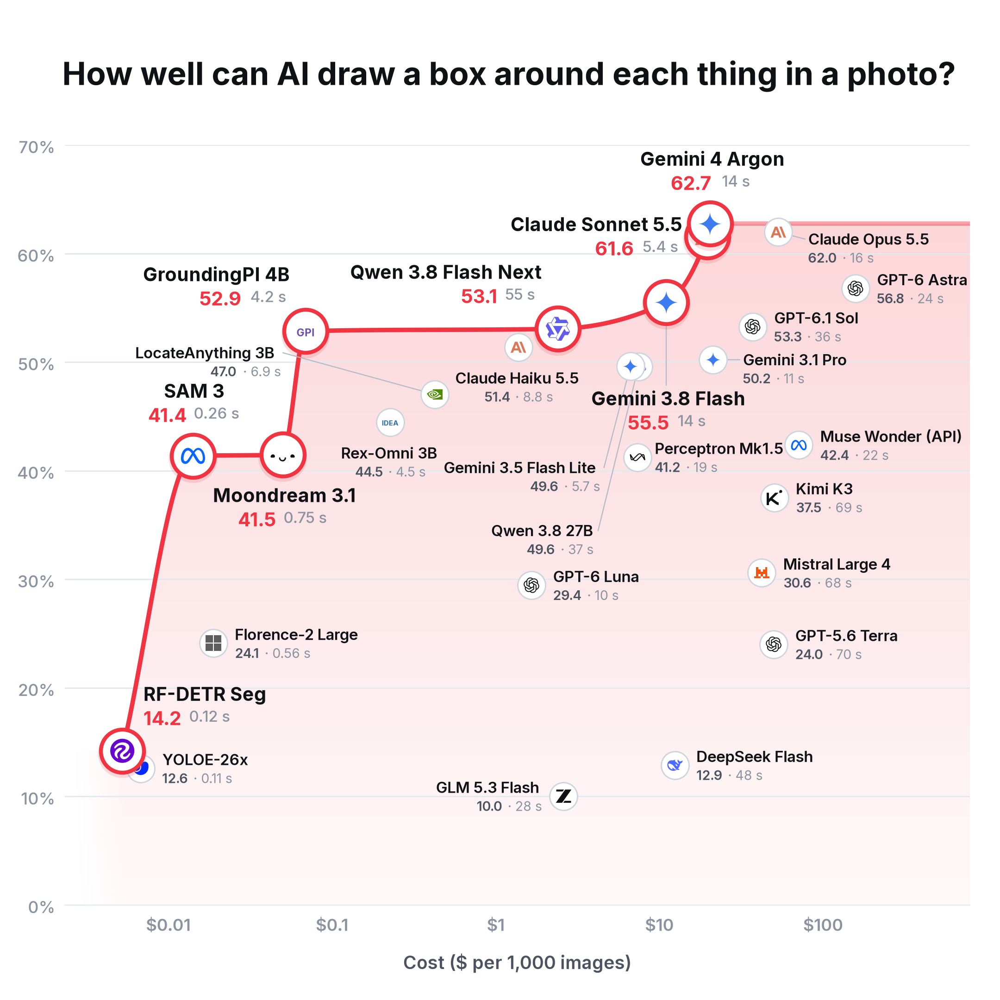
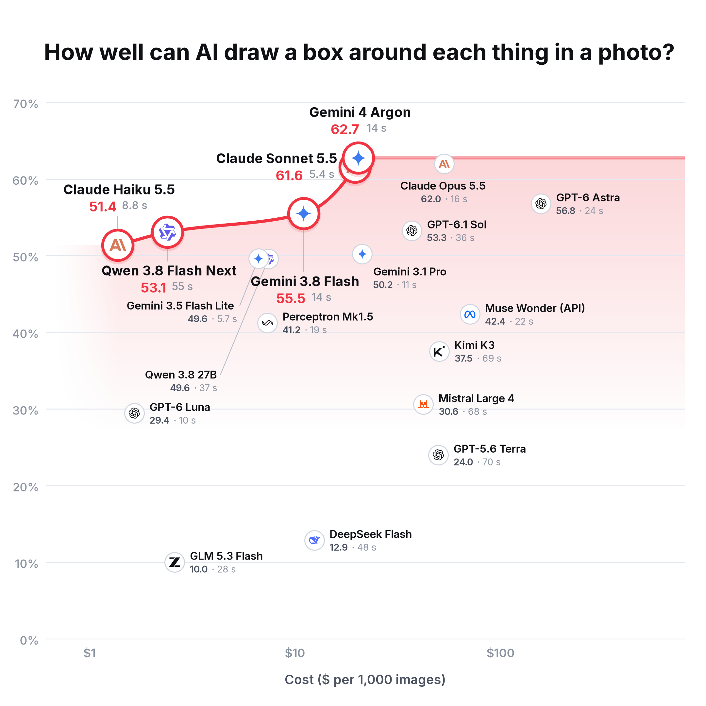
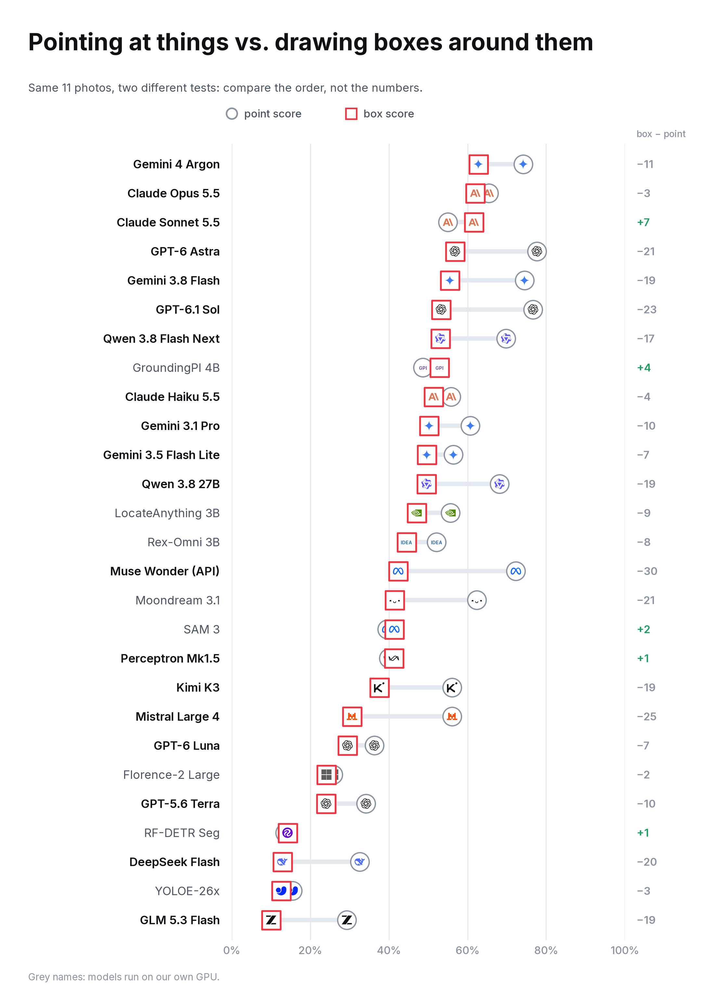
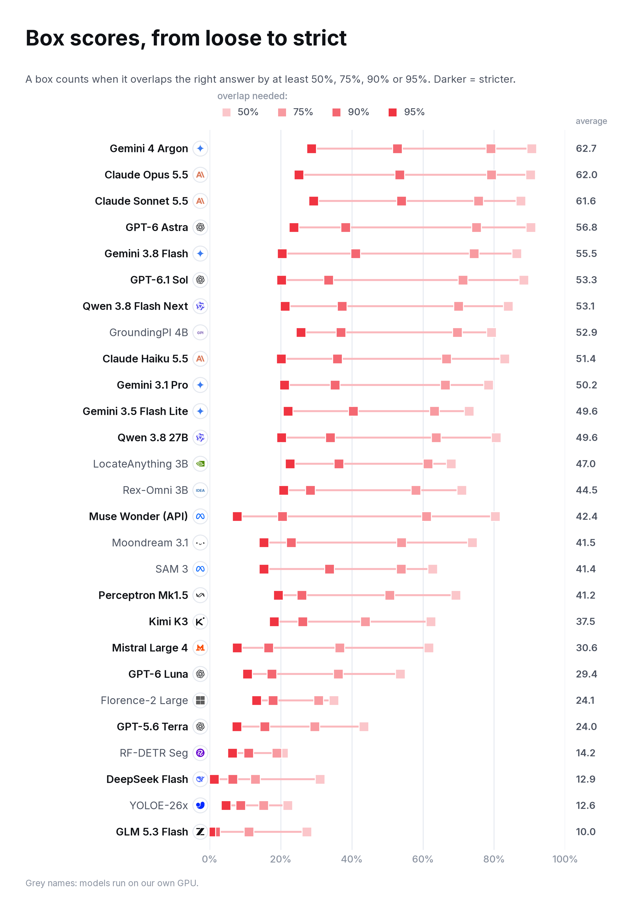
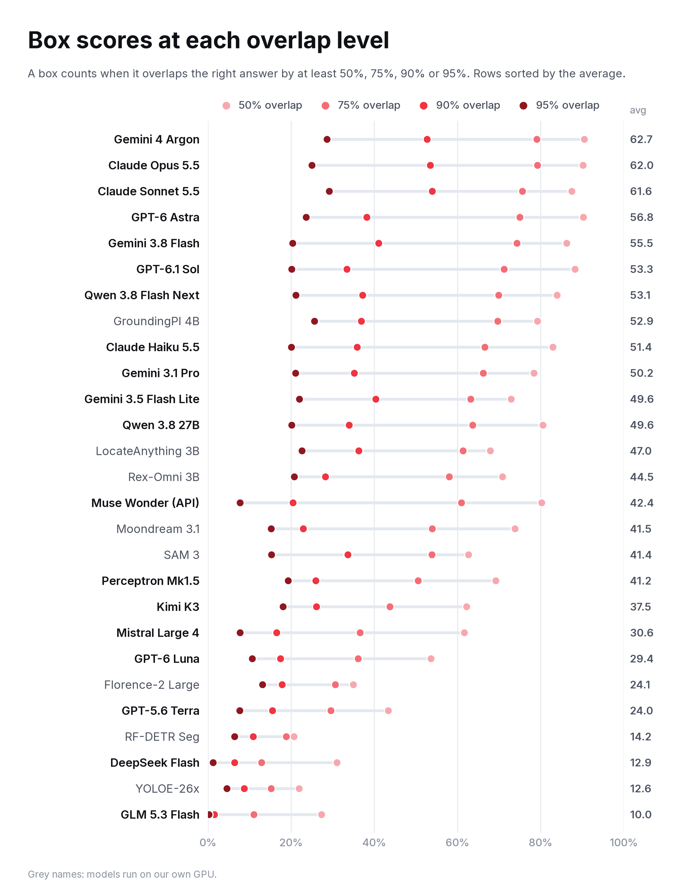
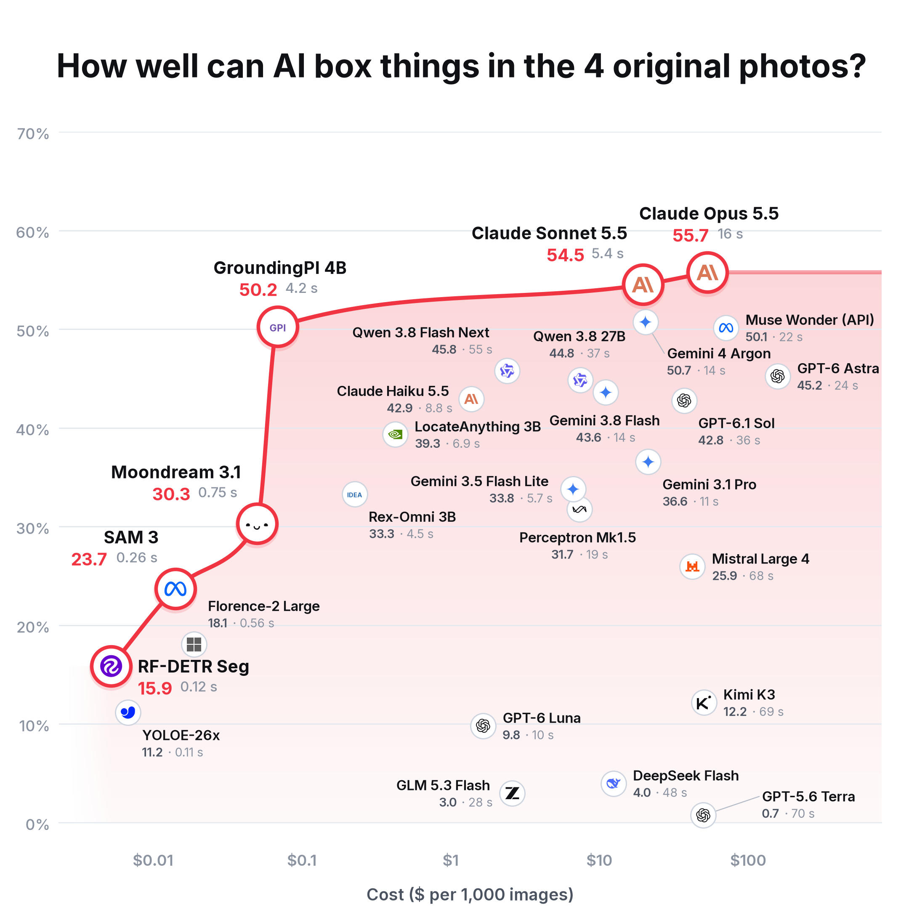
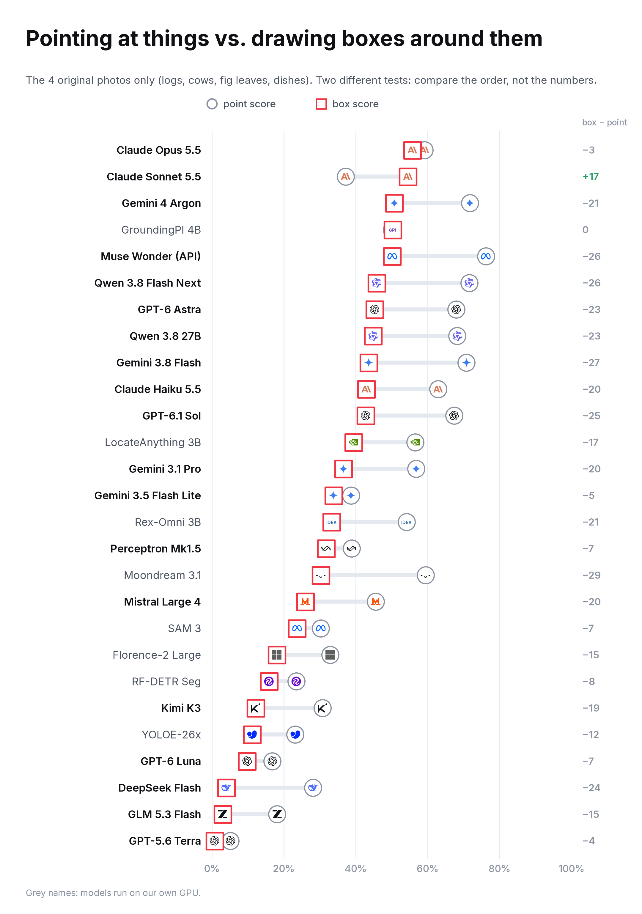

27 models drew a box around each object in 11 photos; scored against a hand-checked answer key at 50, 75, 90 and 95% overlap. 16 October 2026.
Average of the four overlap levels over all 11 photos. The red line joins the best value at each price.

The same chart without the models run on our own GPU.

Round: point score (point benchmark v3). Square: box score. Different tests and answer keys: compare the order more than the size of each gap.

Each model at 50, 75, 90 and 95% overlap; darker squares are stricter levels.

The same numbers as above, in the earlier style with round dots.

Logs, cows, fig leaves and dishes. Each model keeps the prompt chosen on all 11 photos.

Logs, cows, fig leaves and dishes. Round: point score on these four photos (point benchmark v3). Square: box score on the same four.
